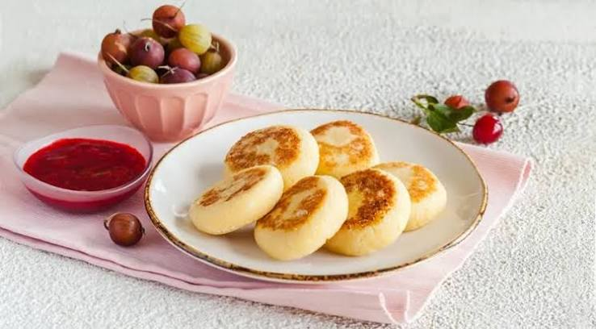

Cottage Cheese Pancakes

Golden, crisp-edged cottage cheese pancakes with a soft, creamy center.
Ingredients:
- 500 g cottage cheese;
- 0,5-0,75 cup all-purpose flour, plus extra for dusting;
- 1 egg;
- 0,25 tsp salt;
- 2 tbsp sugar;
- 20-30 g (about 2 tbsp) ghee, for frying;
- Sour cream or jam, to serve
Instructions:
- Mash the cheese. Break up the cottage cheese in a bowl until it is smooth and free of large lumps.
- Mix the dough. Add the flour, egg, sugar and salt, and stir thoroughly. The dough should be very soft but not sticky on your hands. If your cheese is wet or high in fat, add a little more flour.
- Shape. Dust your work surface with flour. Roll the dough into a log about 5 cm (2 in) wide and cut it crosswise into 1 cm (about 0,5 in) slices. Coat each slice lightly in flour.
- Fry. Heat the ghee in a skillet over medium heat. Fry the pancakes for 4-5 minutes on the first side, then flip and fry another 4-5 minutes until golden.
- Serve. Serve warm with sour cream or jam on the side.
Done! Your pancakes are so beautiful and appetizing!
If you’re interested in recipes for other simple and delicious baked goods from Slavic cuisine, be sure to check out our homepage!